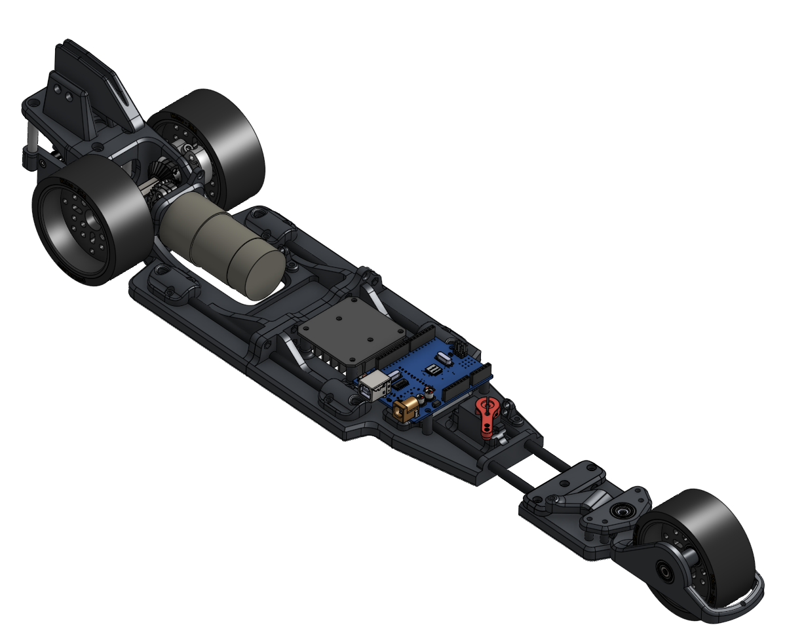
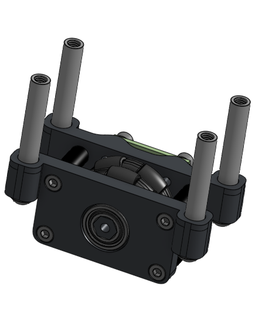
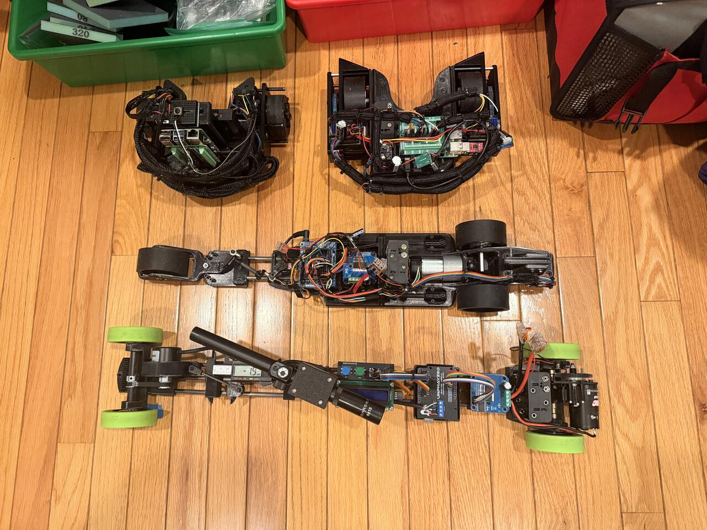

Three-point chassis
I chose two rear wheels and one front wheel to keep the chassis narrow. Using a single front wheel also minimized wheel scrub during steering.
Science Olympiad / Electric Vehicle
I designed and built this Science Olympiad electric vehicle as a solo project. The competition required the vehicle to meet both a target distance and a target time.
My work covered the mechanical design, electrical architecture, and control system. The vehicle uses a narrow three-point chassis, a servo-driven front steering linkage, and encoder feedback for distance measurement.
Interactive CAD
Drag to rotate the model. Scroll or pinch to zoom.
Optimized 3D preview / about 1.9 MB.
Loading the interactive model...
Design overview
A brushed DC motor provides propulsion. A servo turns the single front wheel through a four-bar linkage, and a separate tracking wheel measures ground travel.

01
I needed a vehicle roughly 100–130 mm wide that could turn efficiently. This drove the three-point chassis layout and front steering arrangement.
I chose two rear wheels and one front wheel to keep the chassis narrow. Using a single front wheel also minimized wheel scrub during steering.
The linkage let me mount the steering servo closer to the main body. This shortened the wiring and kept the servo's weight closer to the center of the vehicle.
I used a spring-loaded mount to keep the tracking wheel against the floor over small surface changes. The wheel measures travel independently of the drivetrain.

02
I designed the electrical system around eight AA batteries, a BTS7960 motor driver, and an Arduino Uno R3. The Arduino read both the drive motor encoder and an AS5047P magnetic encoder.
Eight AA batteries supplied power to the brushed DC motor through the BTS7960 motor driver. The Arduino controlled the motor through the driver.
The motor encoder measured drive motor rotation. The AS5047P magnetic encoder measured tracking-wheel rotation, providing a separate measurement of vehicle travel.
Both stopping distance and elapsed time affected the competition result. I used encoder feedback in the control system to track vehicle motion against the target distance.
03
The first linkage had two problems: unpredictable steering near its travel limit and stiffness from small misalignments. I corrected the geometry and changed a joint.
The linkage initially operated at the limit of its controllable range, making the front wheel's rotation difficult to predict. I increased the offset at the linkage connections to move it away from that limit.
The linkage was also too stiff. I added a small ball joint that allowed slight misalignment of the bar and let the linkage move freely.
04

05
06
I tested the vehicle against both competition targets: stopping distance and elapsed time.
The AS5047P provided accurate tracking-wheel measurements for the stopping control. The measured distance error was within 2% of the target distance.
The measured elapsed-time error was less than 0.1% of the target time. Timing was a separate competition requirement alongside stopping distance.